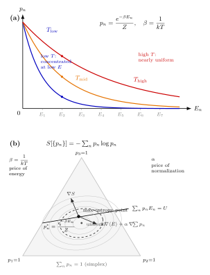

$e^{-\beta E}$ 凭什么是它?
上一节我们把三种系综 (microcanonical, canonical, grand canonical) 摆出来, 但只在 canonical 系综里写下了那句几乎像咒语的话: "在温度 $T$ 的热库里, 一个能级 $E_n$ 被占据的概率正比于 $e^{-E_n/kT}$". 这条规则出现在化学里 (Arrhenius 活化能)、半导体里 (载流子密度)、NMR 里 (自旋极化)、天体物理里 (恒星光谱)、甚至理论计算机里 (模拟退火). 它是统计力学最常出现的面孔, 却也是最少被人认真追问"凭什么"的公式. 多数教材把它当作"平衡态的公设"匆匆画过.
本节想把这个"公设"撕开. 我们不假定任何等概率原理, 不假定任何先验分布; 我们只承认两件几乎无可争议的事: 概率要归一, 以及我们从宏观测量知道了能量的平均值. 就这两条约束, 再加上一条"信息论意义上的谨慎原则" — 在所有符合约束的分布里选最无偏的那一个 — 我们就能把 Boltzmann 因子 $e^{-\beta E}$ 从头搓出来. 这条路径是 E. T. Jaynes 在 1957 年那两篇著名论文 Information Theory and Statistical Mechanics I, II 里铺开的. 它把 19 世纪后半叶 Boltzmann、Gibbs 给出的分布重新解读成一件纯粹的信息论事情: 统计力学的概率不是"自然拟人式地掷骰子", 而是"我们在已知的约束下做出的最诚实的猜测". 这一重解读至今还在引起争论, 但它的数学骨架极其干净 — 这一节把这副骨架摆明白.
一、问题的最小陈述: 已知平均能量, 要求一个概率分布
设想我们面对一个量子系统, 它有一列离散的能级 $E_1, E_2, E_3, \dots$ (连续谱可照搬同样的论证, 只要把求和换成积分). 这个系统不是孤立的: 它和外界有能量交换, 所以它并不始终落在某个固定能级上, 而是在这一族能级之间波动. 我们要问的是: 在足够长的时间里, 或在无数个统计独立的同样系统构成的系综里, 每个能级 $E_n$ 被占据的概率 $p_n$ 是多少?
如果什么都不知道, 这个问题根本没有唯一解 — 任何满足 $\sum_n p_n = 1$ 的非负 $\{p_n\}$ 都"合法". 但宏观热力学给了我们两条信息:
第一条, 概率归一:
$$ \sum_{n} p_n \;=\; 1. $$
第二条, 平均能量等于内能:
$$ \langle E\rangle \;=\; \sum_n p_n E_n \;=\; U. $$
$U$ 是我们用量热法能测到的那个宏观量. 它不需要我们知道每一次测量得到的具体能级, 只需要知道总量被装在多少"能量预算"里. 有了这两条, 满足条件的 $\{p_n\}$ 仍然还有无穷多种. 怎么从无穷多种里挑出唯一的一个, 并且挑得有道理? 这就是本节要填的那块缝隙.
Jaynes 的回答是: 如果我们只知道这两条约束, 就应该挑那个"最不随便加进别的信息的分布". 量化"不随便加信息"的工具是 Shannon 熵
$$ S[\{p_n\}] \;=\; -\sum_n p_n \log p_n, $$
这是 Claude Shannon 1948 年在通信理论里定义的量, 测量的是一个概率分布的"平均不确定度"或"缺失信息量". $S$ 越大, 分布越弥散, 我们掌握的关于"系统具体处于哪一个状态"的信息越少. 反之 $S\to 0$ 意味着分布退化到一个 delta — 我们完全确定系统所处的状态. Jaynes 提出的最大熵原理 (MaxEnt) 要求: 在满足已知约束的所有分布里, 选择 $S$ 取极大值的那一个. 直观的动机是: 任何把 $S$ 变小的做法, 都等于默默引入了一条我们并没掌握的"额外信息". 这等于无中生有, 不诚实.
二、Deepdive: 用 Lagrange 乘子把 Boltzmann 分布挤出来
把以上想法变成数学很直接: 要在两个等式约束下对泛函 $S[\{p_n\}]$ 做极值. 标准工具是 Lagrange 乘子. 引入两个待定系数 $\alpha, \beta$, 构造辅助函数
$$ \mathcal{L}[\{p_n\}] \;=\; -\sum_n p_n \log p_n \;-\; \alpha\!\left(\sum_n p_n - 1\right) \;-\; \beta\!\left(\sum_n p_n E_n - U\right). $$
极值条件是 $\mathcal{L}$ 对每一个 $p_n$ 的偏导数为零. 逐项求导:
$$ \frac{\partial \mathcal{L}}{\partial p_n} \;=\; -\log p_n \;-\; 1 \;-\; \alpha \;-\; \beta E_n \;=\; 0. $$
求解:
$$ \log p_n \;=\; -\,1 - \alpha - \beta E_n \;\;\Longrightarrow\;\; p_n \;=\; e^{-1-\alpha-\beta E_n}. $$
把常数因子 $e^{-1-\alpha}$ 记作 $1/Z$, 得到
$$ p_n \;=\; \frac{1}{Z}\,e^{-\beta E_n}, \qquad Z \;\equiv\; \sum_n e^{-\beta E_n}. \tag{1} $$
这就是 Boltzmann 分布. $Z$ 的形式由归一条件 $\sum_n p_n=1$ 唯一确定, 它就是配分函数. 第一个乘子 $\alpha$ 把自己吞进了归一常数里 — 它没有独立的物理意义, 只是"概率要加起来等于 1"的账单. 第二个乘子 $\beta$ 则留在指数上, 带走了全部物理.
关于"它是不是极大值"一句话需要交代清楚: Shannon 熵作为 $\{p_n\}$ 的函数是严格凹的 (Hessian 为 $-\mathrm{diag}(1/p_n)$, 负定), 两条约束是线性的, 所以约束集是凸集. 凹函数在凸集上的驻点即为整体最大值, 不存在其他局部极值. 这就是为什么 Lagrange 乘子"一摆"就够了, 不需要再去讨论极大还是极小 — 数学已经帮我们兜底.
这个推导完全没有用到"每个微观态等概率"这条教材里常见的公设. 我们没有假设任何先验; 我们只用了"已知约束下最无偏"一条. 这也是为什么 Jaynes 当年的文章被物理学家觉得惊讶甚至不舒服 — 他把原本以为是"自然机制"的东西, 翻译成了"推断原则". 但数学上它毫无疑问是成立的.

三、$\beta$ 凭什么是 $1/kT$: 用 $\partial S/\partial U = 1/T$ 钉死它
到这里, $\beta$ 还只是一个没有单位的数学符号 — 它只是"平均能量约束"对应的 Lagrange 乘子, 跟温度压根没发生关系. 要把它和热力学里的 $T$ 对上, 我们得去用一件从宏观能量守恒派生出来的事实: 熵对内能的偏导数等于温度的倒数. 这是热力学第一、第二定律联合给出的关系, 不依赖任何统计力学的微观假设.
我们把 (1) 式的概率分布代回 Shannon 熵里算一下. 取对数:
$$ \log p_n \;=\; -\beta E_n - \log Z. $$
于是
$$ S \;=\; -\sum_n p_n \log p_n \;=\; \sum_n p_n (\beta E_n + \log Z) \;=\; \beta U + \log Z. $$
这里用了 $\sum_n p_n E_n = U$ 和 $\sum_n p_n = 1$. 注意 $\log Z$ 是 $\beta$ 的函数, 而 $\beta$ 本身又被约束 $\sum p_n E_n = U$ 隐式地确定为 $U$ 的函数. 所以 $S$ 是 $U$ 的函数, 我们可以对 $U$ 求偏导:
$$ \frac{\partial S}{\partial U} \;=\; \beta \;+\; U\,\frac{\partial \beta}{\partial U} \;+\; \frac{\partial \log Z}{\partial \beta}\cdot\frac{\partial \beta}{\partial U}. $$
而根据 $Z=\sum e^{-\beta E_n}$ 直接算:
$$ \frac{\partial \log Z}{\partial \beta} \;=\; \frac{1}{Z}\sum_n (-E_n)\, e^{-\beta E_n} \;=\; -\sum_n p_n E_n \;=\; -U. $$
把它塞回上面那条链式导数, 发现含 $\partial\beta/\partial U$ 的两项恰好抵消, 剩下
$$ \frac{\partial S}{\partial U} \;=\; \beta. \tag{2} $$
但从热力学我们独立地知道 $\partial S/\partial U = 1/T$ (这里 $S$ 是以 $k$ 为单位的信息熵, 如果用 Joule/Kelvin 单位的热力学熵 $S_{\text{thd}}=kS$, 就写 $\partial S_{\text{thd}}/\partial U = 1/T$). 把单位统一, 就得到
$$ \beta \;=\; \frac{1}{kT}, $$
其中 $k = 1.381\times 10^{-23}\,\mathrm{J/K}$ 是 Boltzmann 常数. 这个常数不是从 MaxEnt 推出来的 — 它是把两套熵的单位对齐时引入的换算因子. 真正"从原理里推出的"是: 指数上那个系数必须和内能导数的倒数挂钩. 换句话说, "温度"的微观意义, 就是"在能量约束上每加 1 焦耳, 我们对系统的信息缺失会上升多少". 温度高, 代表我们对系统的无知越多; 温度低, 代表系统被能量预算卡到只能躲在低能级, 我们对它越"看得清".
推出 $\beta = 1/kT$ 的这一步, 是 Jaynes 路径最漂亮的地方 — 它完全不需要先验地讨论"热库"、"粒子碰撞"、"细致平衡", 仅用 Shannon 熵的导数就把 Lagrange 乘子和宏观温度钉在一起. 温度的所有神秘感都被翻译成了一句可操作的话: "温度是加进来的每一份能量对应的信息负担".
四、极限、数字、历史: 这个因子到底在做什么事
要把 (1) 式从一个漂亮的推导变成物理直觉, 得拿它在两头各捏一下, 再代几个实际数字.
极限: $T\to 0$ 与 $T\to\infty$. 令 $T\to 0$, 则 $\beta\to\infty$, 指数 $e^{-\beta E_n}$ 在非基态能级上急剧压到零, 分布塌缩到基态: $p_0\to 1$, 其余 $p_n\to 0$ (如有简并, 则平均分在简并子空间内). Shannon 熵 $S\to \log g_0$, 其中 $g_0$ 是基态简并度 — 如果基态不简并, $S\to 0$. 这正是热力学第三定律 (Nernst) 的微观形态. 反过来令 $T\to\infty$, 则 $\beta\to 0$, 所有能级的权重 $e^{-\beta E_n}\to 1$, 分布退化为等权重的均匀分布, 熵取能级数 $N$ 决定的最大值 $\log N$. 这就是"高温等概率"的图像: 不是自然赋予等概率, 而是 Shannon 熵在无能量约束时自然取到均匀分布 — 它恰好也是 MaxEnt 在只剩归一约束时的解. Boltzmann 分布在这两个极限间连续插值.
数字 1: 室温能标. 取 $T = 300\,\mathrm{K}$, Boltzmann 常数 $k$ 换算到电子伏 ($1\,\mathrm{eV} = 1.602\times 10^{-19}\,\mathrm{J}$):
$$ kT \;=\; \frac{1.381\times 10^{-23}\times 300}{1.602\times 10^{-19}}\,\mathrm{eV} \;\approx\; 0.0259\,\mathrm{eV} \;\approx\; 25\,\mathrm{meV}. $$
这 $25\,\mathrm{meV}$ 是生物、化学、凝聚态物理反复提到的"室温能标". 它本身并不大 — 远小于典型化学键键能 (几个 eV)、远小于可见光光子能量 ($\sim 2\,\mathrm{eV}$)、远小于氢原子电离能 ($13.6\,\mathrm{eV}$). 但它在 Boltzmann 因子的指数里以 $E/kT$ 的形式出现, 任何能标高出它几十倍的激发态, 占据概率就被指数压扁到不可见. 室温下化学、生物里出现的一切有趣动力学, 几乎都在几个 $kT$ 的能标窗口内发生; 再高就"冻结", 再低就"全开", 都不有趣.
数字 2: 一个能隙的占据比. 考虑一个双能级系统, 能隙 $\Delta E = 0.5\,\mathrm{eV}$ (半导体里硅的禁带大约 $1.1\,\mathrm{eV}$, 这里取一半作为典型缺陷能级). 上能级与下能级的占据比是
$$ \frac{p_{\text{up}}}{p_{\text{down}}} \;=\; e^{-\Delta E/kT} \;=\; e^{-0.5/0.0259} \;=\; e^{-19.3} \;\approx\; 4\times 10^{-9}. $$
在室温下, 只有约十亿分之四的概率系统处于上能级. 这就是为什么本征半导体在室温下导电能力微乎其微 (载流子需要从价带激发到导带, 概率被 Boltzmann 因子压到纳米量级); 为什么化学反应中势垒 $E_a$ 每增加一个 $kT$ 左右, 反应速率就下降 $e$ 倍 — 这就是 Arrhenius 1889 年纯经验地写下的那个指数律 $k_{\text{rate}}\propto e^{-E_a/kT}$, 在 Jaynes 的眼光下, 它不过是对过渡态上方概率的直接读数. 反过来, 要让这个比值不那么小, 有两条路: 要么降低 $\Delta E$ (掺杂让能级进禁带里), 要么升高 $T$ (加热)., 这在半导体工程里是每天被使用的杠杆.
历史: Boltzmann 1877, Shannon 1948, Jaynes 1957. 这条公式的形式最早来自 Ludwig Boltzmann 1877 年研究气体分子速度分布的工作, 那是一条基于"碰撞统计"与"细致平衡"的推导, 论证过程依赖于气体微观动力学假设 — 他与同时代一批学者 (Maxwell, Gibbs) 独立地给出了等价的形式. Gibbs 1902 年的 Elementary Principles in Statistical Mechanics 把它系统化成系综理论, 但也没有回答"为什么是这个指数, 而不是别的"这一根本问题. 真正的解释要等到 Shannon 1948 年的信息论 — 他在 A Mathematical Theory of Communication 里给出熵的操作意义, 证明了 $-\sum p\log p$ 是唯一满足几条自然公理 (连续性、单调性、可组合性) 的不确定度度量. Jaynes 1957 年那两篇发表在 Physical Review 的文章把这两条线合拢: 他论证统计力学的平衡态分布不过是在宏观约束 (能量, 粒子数, ...) 下对 Shannon 熵做最大化的结果. 自此, Boltzmann 分布从"气体碰撞留下的痕迹"变成了"信息论最谨慎的推断". 很多物理学家至今仍觉得这一重构过于主观; 但它的预言与经典推导完全一致, 而且能干净地推广到非平衡态、贝叶斯推断、机器学习甚至神经网络训练里 — 这些领域里, 没有"碰撞"和"细致平衡"可谈, 但 MaxEnt 照样给出好的答案.
更广泛地, 这个推导模板适用于任何"给定若干宏观约束 + 最大 Shannon 熵"的问题. 如果再加一条约束 $\sum p_n N_n = \langle N\rangle$ (粒子数平均已知), Lagrange 乘子多一个 $\mu\beta$, 立刻得到巨正则系综 $p_n\propto e^{-\beta(E_n-\mu N_n)}$, 其中 $\mu$ 就是化学势; 如果约束变成"粒子数的方差", 得到的是别的分布. 换句话说, 系综不是自然赋予的, 而是对应于"你承认知道什么". 每一条约束进来, 就多一个 Lagrange 乘子, 就多一个共轭宏观量 — $\beta$ 对应 $U$, $\mu\beta$ 对应 $N$, 压强除温度对应 $V$ (如果体积也能变). 统计力学的所有宏观共轭对都源自这同一个模板.
小结
本节把人人会背的 $p_n=e^{-\beta E_n}/Z$ 从"公设"还原成"推断": 只要承认系统的概率分布应该在"平均能量等于 $U$、概率归一"这两条约束下最大化 Shannon 熵, Lagrange 乘子就直接给出指数形式, $\beta$ 作为能量约束的"价格"自动落在 $\log p_n$ 的斜率上. 再用 $\partial S/\partial U = 1/T$ 这条纯热力学关系, 把 $\beta$ 钉在 $1/kT$ 上 — 温度从此有了信息论意义. 代入室温 $kT\approx 25\,\mathrm{meV}$, 这条公式立刻变成一把量纲尺, 解释了从化学活化能到半导体载流子的一切: 能级差只要超过几十个 $kT$, 它就被指数压扁到可忽略; 这条简单的规律在化学、固体、核磁共振、天体物理里被反复启用. 更值得注意的是 Jaynes 路径里得到的"意外红利": 它不依赖碰撞、不依赖细致平衡、不依赖任何对微观动力学的假设 — 所以它可以被原样搬到贝叶斯推断、机器学习、模拟退火上去, 这正是为什么 $e^{-\beta E}$ 会在远离物理的领域里反复出现. 下一节我们把这套机器装到最经典的对象 — 理想气体 — 上, 看看 $Z$ 一旦被显式算出来, 热力学的整幅图 (状态方程, 比热, 熵, 化学势) 如何从一个标量函数里全部涌出.
▲